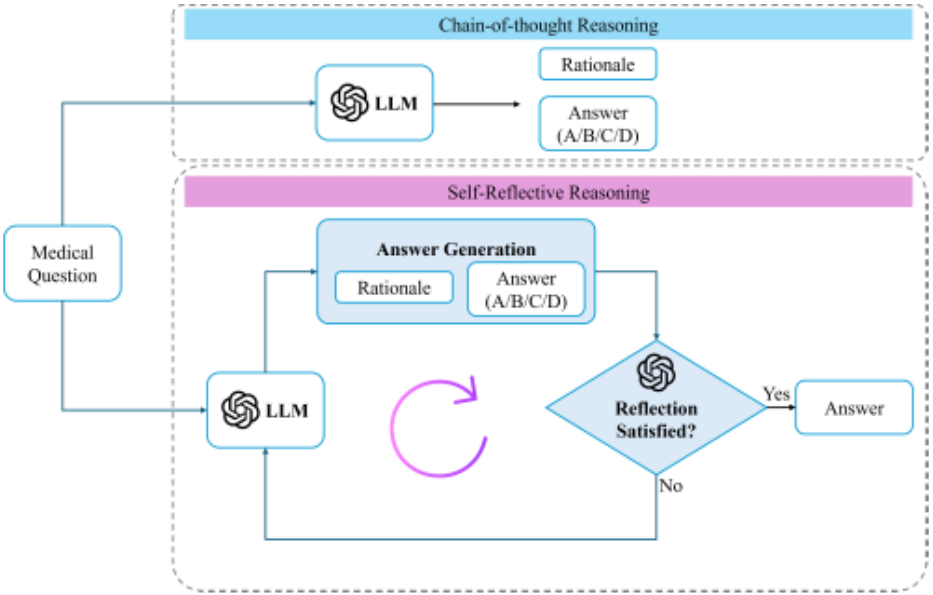
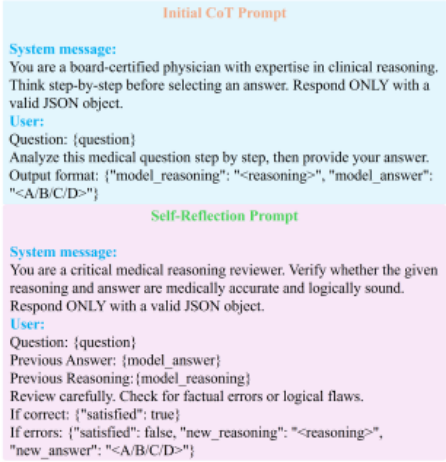
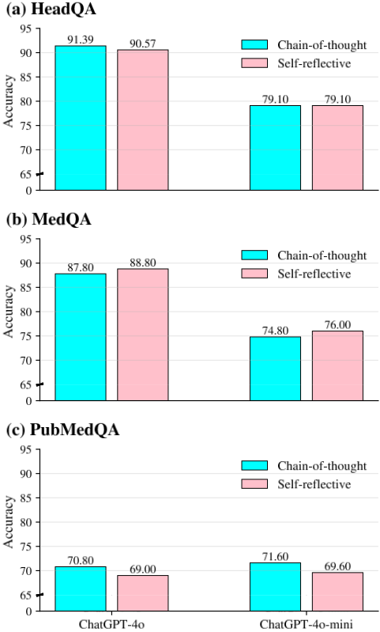
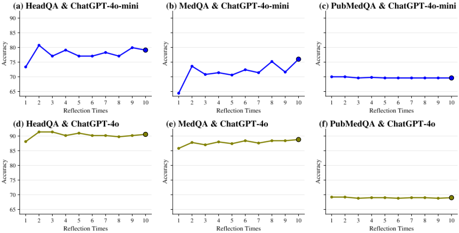
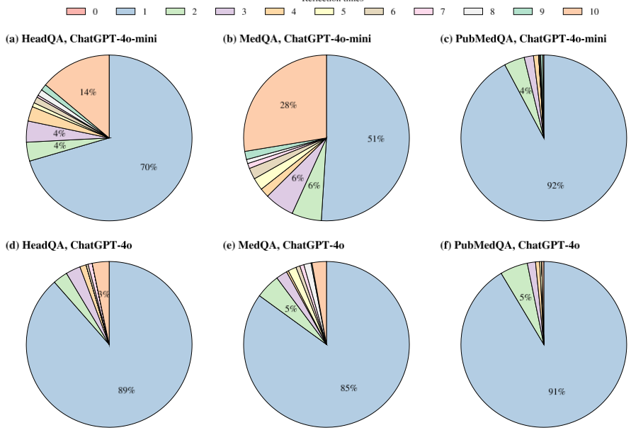
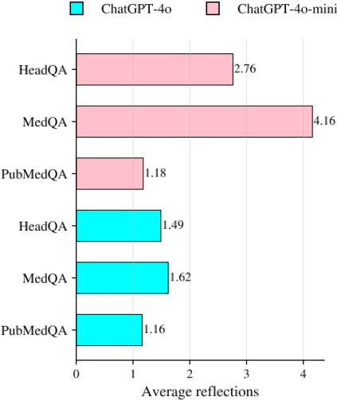

大语言模型（LLM）能否在医学问答中自我纠错？一项探索性研究
该论文实证检验纯提示驱动的自我反思（self-reflection）能否提升 LLM 在安全攸关医学问答中的可靠性。方法上以 CoT 提示为基线，叠加迭代自我反思循环：模型先给出推理与答案，再扮演批评者审查自身推理，发现错误则修订，最多 K=10 步，并逐步追踪答案演化；在 MedQA、HeadQA、PubMedQA 三个基准上用 GPT-4o 与 GPT-4o-mini 做零样本黑盒实验。关键结论：自反思不能稳定提升准确率——仅在 MedQA 上有约 1 个百分点的小幅提升，在 HeadQA 与 PubMedQA 上持平或下降，增加反思步数也不保证更好表现，多数样本在 0-1 步内即终止反思。作者强调推理透明不等于推理正确，反思可能强化确认偏误式的后验合理化，应视为诊断分析工具而非独立的可靠性机制，需配合外部 grounding 或验证信号使用。
自我反思式（self-corrective）提示被广泛宣称能通过让 LLM 批评并修订自身推理来提升可靠性，但其在安全攸关的医学问答中的有效性尚不清楚。本文要实证回答：当模型被明确要求审查并修订自己的 CoT 推理时，预测如何演化——自我反思究竟带来错误纠正、错误持续，还是引入新错误，以及这些结果如何随数据集与模型规模变化。
以标准 CoT 提示为基线，扩展出迭代自我反思框架：模型先生成逐步临床推理与答案（与基线完全一致以保证公平比较），随后在每一步扮演自身推理的批评者，判断推理与答案在医学上是否准确、逻辑上是否成立；若无错误则终止，否则生成修订后的推理与新答案，循环最多 K=10 步。逐步记录预测答案，对未在最大步数内报告满意的样本额外计算多数投票聚合（仅用于分析）。全部实验为零样本、通过 OpenAI API 访问的黑盒模型（GPT-4o 与 GPT-4o-mini），无参数更新或微调，在 MedQA、HeadQA、PubMedQA 官方测试集上评估，并分析反思深度分布与平均反思步数。
HeadQA：自反思后 GPT-4o 准确率由 91.39% 降至 90.57%，GPT-4o-mini 保持 79.10% 不变
MedQA：自反思带来小幅提升，GPT-4o 由 87.80% 升至 88.80%，GPT-4o-mini 由 74.80% 升至 76.00%
PubMedQA：两个模型自反思后均下降，GPT-4o 由 70.80% 降至 69.00%，GPT-4o-mini 由 71.60% 降至 69.60%
准确率通常在少量反思步后即稳定，随反思步数（最多 10 步）增加并无单调提升；GPT-4o-mini 在 MedQA 上准确率在迭代间震荡而非稳步改善
GPT-4o 在每个数据集上超过 85% 的样本在初始答案后无需额外反思；GPT-4o-mini 反思更频繁（MedQA 上尤甚），但接近 10 步上限的深度反思在所有设置中都少见
GPT-4o 所需平均反思步数始终少于 GPT-4o-mini；MedQA 引发最高的平均反思深度，PubMedQA 所需步数最少
不提出新方法、不以刷榜为目标，而是把自我反思当作分析工具，系统追踪预测在反思步之间的演化，区分错误纠正、错误持续与新错误引入三种结果；并给出'推理透明≠推理正确'、纯提示自反思可能类似人类确认偏误的实证证据，挑战了通用域自反思有效结论可直接迁移到安全攸关领域的假设。
相关度级别：high
命中能力域：3.2 提示工程 | 3.3 Agent 架构与工具使用 | 3.5 评测与可靠使用
理由：团队核心工作是用提示与 Agent loop 构建工程自动化：提示设计与优化对应 3.2，Agent 的'规划与反思'及单 Agent 执行可靠性对应 3.3，产出质量与可靠性评测对应 3.5。本文以受控实验直接回答了团队在设计 Agent 反思环节时必然面对的问题：纯提示式自我反思在无外部验证信号时并不可靠，可能固化错误甚至引入新错误，且效果强依赖任务类型与模型规模。这一负面结论能帮助团队避免把 self-critique/revise 当作默认可靠性手段，转而设计带外部 grounding/验证的反思机制，其'逐步追踪答案变化并三分类错误去向'的评测方法也可直接移植到团队内部评测。
建议动作：深入精读并做内部分享
arXiv:2604.00261v2 [cs.CL] 2026年4月2日
大语言模型能否在医学问答中自我纠错？一项探索性研究
Zaifu Zhan 1,2,* , Mengyuan Cui 3,* , Rui Zhang 2 ,
1 明尼苏达大学电气与计算机工程系，美国明尼阿波利斯
2 明尼苏达大学外科学系计算健康科学部，美国明尼阿波利斯
3 圣托马斯大学软件工程系，美国圣保罗
zhan8023@umn.edu, cui06590@stthomas.edu, ruizhang@umn.edu
摘要 - 大语言模型（Large Language Models, LLMs）在医学问答（medical QA）任务上已取得强劲表现，思维链（chain-of-thought, CoT）提示通过引出显式的中间推理进一步提升了结果；与此同时，自反思（自我纠错）提示被广泛宣称能够通过促使 LLMs 批判并修订自身推理来增强模型可靠性，但其在安全攸关医疗场景中的有效性仍不明确。在本工作中，我们对医学多选题问答中的自反思推理进行了探索性分析：使用 GPT-4o 和 GPT-4o-mini，我们在三个广泛使用的医学问答基准测试（benchmark）（MedQA、HeadQA 和 PubMedQA）上，将标准 CoT 提示与迭代式自反思循环进行比较，并追踪预测在各反思步骤之间的演变情况。我们分析了自反思究竟会带来错误纠正、错误持续存在，还是引入新的错误。我们的结果表明，自反思提示并不能持续提升准确率，其影响高度依赖于数据集和模型：它在 MedQA 上带来适度收益，但在 HeadQA 和 PubMedQA 上收益有限甚至为负，且增加反思步骤的数量并不能保证获得更好的性能。这些发现凸显了推理透明性与推理正确性之间的差距，表明自反思推理更适合被视为一种用于理解模型行为的分析工具，而非提升医学问答可靠性的独立解决方案。
关键词 - 大语言模型、医学问答、临床推理、思维链提示、自反思推理、迭代推理
大语言模型（Large Language Models, LLMs）[1], [2] 近期在广泛的自然语言处理（Natural Language Processing, NLP）任务[3], [4]中取得了显著进展，涵盖信息抽取[5]、问答[6]、推理[7]、摘要[8]以及决策支持[9], [10]。在医学领域，这些模型在医学问答（medical question answering, medical QA）基准测试（benchmark）及相关临床 NLP 任务上展现出强劲性能[11]，这引发了人们对其在临床推理辅助、教育支持以及下游决策工作流程中潜在应用的日益浓厚的兴趣。medical QA 本质上具有挑战性，因为它需要综合运用广博的生物医学知识、对领域特定术语的理解、多步推理，以及在不确定性条件下整合证据的能力[12]。此外，由于医学是一个安全攸关（safety-critical）领域，对 LLMs 的评估不仅必须考虑准确性，还必须考虑可靠性、鲁棒性与可信性，尤其是当模型给出可能影响人类决策的具有说服力的论证时。
* 这些作者对本工作贡献相同。
本工作得到美国国家补充与综合健康中心（National Center for Complementary and Integrative Health）[资助编号 R01AT009457, U01AT012871]、美国国家老龄研究所（National Institute on Aging）[资助编号 R01AG078154]、美国国家癌症研究所（National Cancer Institute）[资助编号 R01CA287413]、美国国家糖尿病、消化与肾脏疾病研究所（National Institute of Diabetes and Digestive and Kidney Diseases）[资助编号 R01DK115629]以及美国国家少数族裔健康与健康差异研究所（National Institute on Minority Health and Health Disparities）[资助编号 1R21MD019134-01]的资助。
在常用的 benchmark 中，源自美国医师执照考试（United States Medical Licensing Examination, USMLE）的 MedQA-USMLE [13] 已成为一项要求尤为苛刻的医学问答任务。MedQA-USMLE 源自专业医学执照考试，其设计目的在于评估模型能否执行多步临床推理、鉴别诊断与假设评估，而非仅仅检索孤立的事实。与许多通用领域的多选题问答数据集相比，medical QA 通常需要将症状与病理生理学相关联、区分各种看似合理的竞争性诊断，并选择最合适的处置方案或下一步决策。因此，MedQA-USMLE 常被用作衡量 LLM 在临床推理与医学决策方面能力的代表性 benchmark，而在 MedQA 上的强劲表现通常被解读为模型能够超越表层模式匹配的证据。这也使得 MedQA 成为在医学场景下研究推理行为、失效模式与错误模式的宝贵试验平台。
包括医学问答在内的复杂推理任务近期性能提升的一个关键驱动力，是面向推理的提示策略的发展，其中最著名的是思维链（chain-of-thought, CoT）提示 [14]。通过明确指示大语言模型（Large Language Model, LLM）在给出最终答案之前先生成中间推理步骤，CoT 提示已被证明能够提高需要逐步推理的任务的准确率。CoT 已在数学推理 [14]、常识推理以及科学问答 [15] 中得到广泛研究，并且也被应用于 MedQA 等医学问答基准测试（benchmark）及类似数据集 [16], [17]。除性能提升之外，CoT 提示还为可解释性与透明性带来了实际益处 [18]：它揭示出一条可供检查、比较和分析的推理轨迹，使研究人员能够诊断错误可能出现的环节。这一特性催生了一个日益壮大的、专注于推理分析的研究方向：在这一方向中，CoT 不仅是一种用于改进输出的技术，也是理解 LLM 在高风险情境下如何得出决策的一个透镜。
随着该领域的不断发展，研究人员日益认识到单次推理并不总是足够的，这促使人们提出将 CoT 扩展为迭代推理框架的方法 [19]-[21]。此类方法中一个突出的类别是自反思推理（self-reflective reasoning）[22]-[24]，也被称为自我纠错（self-correction）、自我批评（self-critique）或迭代精炼（iterative refinement）。在这些方法中，LLM 被提示去评估自身的推理轨迹和答案，识别可能存在的逻辑或事实问题，并通过一轮或多轮反思来修订其结论。自反思之所以具有吸引力，有以下几个原因。首先，它完全在推理阶段运行，不需要额外的训练数据、微调或参数更新，因而可广泛适用于通过 API 访问的黑盒模型。其次，它提供了一种简单的机制，通过允许模型在检测到不确定性或不一致性时重新审视自身的输出，从而有望提升可靠性。第三，它符合一个直观的假设：如果 LLM 能够生成连贯的逐步解释，那么它们或许也能够识别出这些解释何时是不完整的、相互矛盾的或在医学上不合常理的。在通用领域任务中报告的令人鼓舞的结果进一步强化了这样一种信念：自反思能够通过实现内部错误纠正来提升最终答案的质量。
然而，尽管自反思提示（self-reflective prompting）日益受到关注，其在医学问答（Medical QA）中的有效性和可靠性仍未得到充分刻画。医学问答与许多通用领域推理任务的不同之处，可能会限制自反思的收益。正确答案往往取决于细微的临床细节、对症状和检查结果的精确解读，以及在多个看似合理的候选选项中选出最合适的一项。此外，医学问题常常涉及必须仔细推断的潜在假设（例如患者人口统计学特征、病情严重程度、禁忌症）。这些特性引出了一个重要问题：在安全关键领域中，自反思是否真正发挥了纠错机制的作用。如果大语言模型（LLM）能够通过反思纠正自身的错误，那么为什么初始的思维链（chain-of-thought, CoT）未能产生正确答案？反过来，如果初始推理本身存在缺陷，又有什么能保证后续的自我评估会带来真正的纠正，而不是通过事后合理化（post-hoc rationalization）来强化一个错误的假设？在实践中，反复反思有可能放大自信却错误的推理，这在医疗场景中尤其令人担忧，因为有说服力的解释即使在答案错误的情况下也可能增加用户的信任。因此，必须通过实证来验证自反思何时有效、何时失效，以及它是否会引入新的失效模式。
出于对这些问题的关注，我们针对 LLM 在医学多项选择题问答中的自反思推理开展了一项探索性研究。我们的目标并非提出一种旨在最大化基准测试（benchmark）性能的新方法，而是系统性地分析：当模型被明确提示去审查并修改自身的 CoT 推理时，LLM 的预测会如何演变。我们在三个广泛使用的医学 QA 基准测试——MedQA、HeadQA 和 PubMedQA——上评估这一行为，以涵盖从临床考试风格的问题到基于生物医学文献的推理场景等多种情形。具体而言，我们将标准 CoT 提示与迭代自反思循环进行比较，并跟踪模型在各个反思步骤中的答案。这使我们能够研究自反思究竟会带来错误纠正、错误持续存在，还是引入新的错误，以及这些结果如何随数据集和模型规模而变化。通过刻画这些行为，我们旨在为安全关键应用中自反思推理用于医学问答的可行性、局限性及其可靠性影响提供实证洞见。
在本工作中，我们针对大语言模型（LLM）在医学多选题问答中的自反思推理开展了一项探索性研究。我们的目标并非提出一种新的提升性能的方法，而是考察当被明确提示进行反思时，LLM 是否有能力识别并纠正自身的推理错误。
如图 1 所示，我们首先建立思维链（CoT）推理基线，其中模型生成显式的逐步临床推理依据，随后给出答案。然后，我们通过一个作用于模型自身推理轨迹的迭代自反思流程对该基线进行扩展。通过比较反思前后的模型行为，我们分析自反思究竟会带来错误纠正、错误持续存在，还是引入新的错误。
我们在三个广泛使用的医学问答（medical QA）基准测试（benchmark）上开展分析，这些基准测试涵盖了互补的医学知识来源和推理需求。所有数据集均使用其官方测试集划分进行评估，并通过将模型预测与所提供的标准答案（groundtruth）进行比对来计算准确率。数据集统计信息汇总于表 I。
| Dataset | Test Set Size | Source |
|---|---|---|
| MedQA(USMLE) | 1,273 | US medical licensing examinations |
| HeadQA | 244 | Spanish medical specialization exams |
| PubMedQA | 500 | Biomedical literature (PubMed abstracts) |
| Dataset | Test Set Size | Source |
a) MedQA：MedQA(USMLE) [13] 是一个基于美国医师执照考试构建的大规模基准测试，旨在评估专业水平的医学知识和多步临床推理。其问题通常需要综合临床表现、区分各种可能的鉴别诊断，并从多个选项中选出最合适的答案。由于其源自执照考试且强调结构化临床推理，MedQA 通常被认为是评估大语言模型（LLM）医学推理能力的一个具有挑战性的基准测试。
b) HeadQA：HeadQA [25] 由从西班牙医学专科考试中收集的医学考试题目组成，涵盖多样的临床专科和真实的决策场景。与 MedQA 相比，HeadQA 提供了不同的主题分布和考试风格，为模型在不同医学问答设置下的泛化能力提供了额外的观察视角。重要的是，HeadQA 对 MedQA 形成补充，用于检验所观察到的自反思行为在不同的考试来源和临床情境下是否依然存在。
c) PubMedQA：PubMedQA [26] 是一个基于 PubMed 摘要构建的生物医学问答数据集，要求推理以科学证据为依据，而非考试式的临床启发式方法。与基于考试的 MedQA 和 HeadQA 不同，PubMedQA 强调解读生物医学文献，并将问题与摘要中描述的研究发现相关联。因此，该数据集使我们能够考察当问题更加以证据为中心时，自反思提示的表现是否有所不同。
作为基线，我们采用思维链（CoT）提示来引出模型的显式推理。给定一个医学问题，模型被指示生成逐步的临床推理依据，然后选出最终的多项选择题答案。该基线反映了以往医学问答工作中常用的基于推理的标准提示方法。
CoT 基线在我们的研究中有两个目的：（1）它为每次预测提供透明的推理轨迹；（2）它确立了一个参照点，我们据此考察自反思推理的效果。
我们在 CoT 基线的基础上扩展出一个迭代式自反思框架，如图 1 所示，旨在探究模型评估自身推理的能力。
a) 初始推理：对于每个问题，模型首先使用与基线相同的 CoT 提示生成一条推理轨迹和一个答案。该初始输出与基线预测完全一致，从而确保比较的公平性。
b) 迭代式自反思：在生成初始答案后，模型被提示扮演其自身推理的批判性审阅者。在每个反思步骤中，模型评估先前的推理和答案在医学上是否准确、在逻辑上是否严密。如果模型判定不存在错误，反思过程即终止；否则，模型生成一条修订后的推理轨迹和一个更新后的答案。
反思循环按固定的最大步数重复进行。重要的是，我们并不假设自反思能够提升准确率；相反，它被用作一种分析工具，用于观察模型在被要求评估和修订自身推理时的反应。
c) 答案追踪与聚合：我们记录模型在每个反思步骤中预测的答案。如果模型在最大反思尝试次数内未能报告其已满意（即未确认推理无误），我们还会对所有已生成的预测额外计算一个多数投票答案。该聚合仅用于分析目的，并不假设反思能够提升性能。
所有实验均使用通过 OpenAI API 访问的大语言模型（LLM）进行。除非另有说明，我们使用 GPT-4o [1] 和 GPT-4o-mini [1] 作为主要模型。这些模型被视为黑盒系统，不进行任何参数更新或微调。所有观察到的行为均源于基于提示的推理。
我们设计了两种类型的提示，分别对应思维链（CoT）基线和自我反思流程。
a) CoT 提示：CoT 提示指示模型生成逐步的临床推理依据，随后给出最终答案。该提示鼓励显式推理，但不假设其正确性。
b) 反思提示：反思提示指示模型审查其先前的推理和答案，并判断是否存在错误。如果识别出错误，则要求模型修正其推理并更新答案。所有输出均被约束为结构化格式，以便进行可靠的分析。
MedQA 数据集所使用的具体提示如图 2 所示。
对于每个问题，我们允许最多进行 K 次自我反思尝试，其中 K = 10，除非另有说明。我们报告 CoT 基线的准确率，以及每次反思步骤之后的准确率。
所有实验均在零样本（zero-shot）设置下进行，不提供任务特定的示例。我们并不聚焦于性能提升，而是分析模型预测在各反思步骤之间如何变化，包括反思纠正了错误、未能纠正错误或引入了新错误的情况。
图 3 在三个医学问答基准测试（benchmark）（HeadQA、MedQA、PubMedQA）上，使用 ChatGPT-4o


和 ChatGPT-4o-mini 比较了标准思维链（CoT）提示与我们的自我反思推理流程。总体而言，自我反思并不能持续提升性能；相反，其效果同时取决于数据集和模型。
具体而言，在 HeadQA 上，ChatGPT-4o 在自我反思后准确率略有下降（从 91.39% 降至 90.57%），而 ChatGPT-4o-mini 则没有变化（两种设置下均为 79.10%）。在 MedQA 上，自我反思为两个模型都带来了小幅提升，ChatGPT-4o 的准确率从 87.80% 提升至 88.80%，ChatGPT-4o-mini 的准确率从 74.80% 提升至 76.00%。相比之下，在 PubMedQA 上，自我反思使两个模型的性能均略有下降（ChatGPT-4o：70.80% → 69.00%；ChatGPT-4o-mini：71.60% → 69.60%）。这些结果表明，自我反思并非一种普遍有益的推理策略；在某些情况下，它还可能引入额外的错误。
为了考察性能如何随反思深度的增加而演变，图 4 给出了准确率随累计反思步数（最多 10 次迭代）变化的曲线。在各数据集上，准确率通常在少量步数之后便趋于稳定，并未随着反思的继续而呈现单调提升。
在 HeadQA 和 MedQA 上，ChatGPT-4o 在各反思步骤间保持相对稳定，仅有轻微波动。ChatGPT-4o-mini 则表现出更大的波动，尤其是在 MedQA 上，其准确率在各次迭代间来回震荡，而非稳步提升。在 PubMedQA 上，两个模型均产生近乎平坦的曲线，这表明额外的反思很少会改变最终答案。总体而言，反复的自我反思并不能可靠地累积收益，而过长的反思反而可能加剧不稳定性，对于较小的模型尤其如此。

图6总结了每个模型在每个数据集上使用的平均反思步数。ChatGPT-4o 始终比 ChatGPT-4o-mini 需要更少的反思步数，这表明其初始推理具有更高的稳定性。对于两个模型而言，MedQA 引起的平均反思深度最高，而 PubMedQA 总体上所需的步数最少。MedQA 上较大的反思深度可能反映了专业级考试题目的复杂性，这类题目需要多步临床推理；而 PubMedQA 似乎不太适合通过反思进行迭代式自我纠错。
综上所述，这些结果表明，自我反思式推理并非医学多选题问答中可靠的性能提升机制。虽然反思偶尔能够纠正初始错误，但它也可能保留错误的推理过程或引入新的错误。自我反思的影响高度依赖于数据集特性和模型规模，而增加反思步数并不能保证准确率的提升。
诸如 MedQA 之类的医学问答基准测试（benchmark）在评估大语言模型（LLM）的临床推理能力方面发挥着核心作用。与面向事实的生物医学问答（QA）数据集不同，MedQA 旨在反映专业医学执业资格考试，要求进行多步推理、鉴别诊断，并在不确定性条件下整合临床知识。因此，模型在 MedQA 上的性能常被用作一种替代指标，用以评估模型的推理行为是否符合真实世界的临床决策，而非表面层次的模式匹配。
鉴于自我反思式提示策略在医学及安全关键应用中的日益普及，严格检验此类技术是否真正提升了模型可靠性十分重要。尽管人们常常假设自我反思能够通过促使模型重新评估自身推理来提高正确性，但这一假设在高风险医学场景中仍未得到充分探究。因此，验证自我反思何时以及为何成功或失败至关重要，这不仅关系到性能评估，也关系到理解在临床环境中部署自我评估模型的局限性。
我们的结果提供了实证证据，表明当自我反思式推理作为一种纯粹基于提示的推理策略加以应用时，并不能可靠地提升医学多选题问答的性能。相反，其效果高度依赖于数据集特性和模型规模。这些发现表明，与其将自我反思视为 Reflection times 一种通用的准确率提升手段，不如将其视为探查模型推理行为的诊断工具。


对于我们的结果中所观察到的这种随数据集而异的行为，一种可能的解释在于不同医学问答基准测试所需推理的性质。MedQA 的问题通常涉及多步临床推理和鉴别诊断，在这种情况下，重新审视中间假设有时有助于发现被忽略的不一致之处。相比之下，PubMedQA 强调以生物医学摘要为基础的循证推理。在这类情况下，错误可能源于对证据的误读或利用不充分，而仅靠迭代式自我反思难以轻易纠正。HeadQA 虽然同样基于考试，但往往结构化程度更高，一旦初始推理路径形成，留给反思驱动修正的机会便更少。
我们的研究结果还表明，自我反思式提示可能并非真正的纠错机制，反而可能强化既有的推理轨迹。一旦模型确定了某种初始解释，后续的反思步骤可能只是为该决策寻找合理化理由，而非对其进行批判性质疑，这类似于人类推理中的确认偏误。这一现象在医疗场景中尤其令人担忧：错误的结论若伴随着连贯且自信的解释，即使本身有误，也可能增加用户的信任。因此，不应将推理的透明性单独等同于推理的可靠性。
此外，我们观察到不同模型规模在自我反思行为上存在明显差异。诸如 ChatGPT4o 等较大的模型往往需要更少的反思步骤，且性能表现更加稳定，这表明其初始思维链（chain-of-thought, CoT）推理具有较高的内部一致性。较小的模型虽然更容易进行反思，但在各反思步骤之间表现出更大的波动性，这表明当底层推理能力较弱时，迭代式自我评估可能引入不稳定性而非实现纠错。这凸显了自我反思的有效性与模型容量和推理鲁棒性密切相关。
综上所述，这些观察结果凸显了将自我反思式提示作为医疗 AI 系统独立的安全或可靠性机制所存在的局限性。尽管自我反思能够为理解模型行为提供有价值的洞见，但在应用于医学等安全关键领域时，应当辅以外部接地（grounding）、验证或不确定性感知机制。
本研究存在若干应当指出的局限性。首先，我们的分析仅聚焦于基于提示的自我反思式推理，未纳入外部监督、检索 [27] 或验证信号。因此，反思过程完全依赖于模型的内部表征，这可能强化错误推理而非纠正错误。其次，我们主要在答案层面评估自我反思，这可能限制其在错误产生的更早推理步骤中进行干预的能力。最后，我们的实验仅在有限的一组多选题医疗问答（QA）基准测试上进行，未扩展至开放式临床推理或真实世界的决策支持场景。

未来的工作可以探索将自我反思式推理与外部接地（grounding）机制相结合，例如检索增强证据、不确定性估计或专家定义的约束，以更有效地引导修订过程。此外，在中间推理阶段应用反思，而非仅在最终答案生成之后才应用，可能为有意义的纠错提供更大的机会。将这一分析扩展到更广泛的临床任务和更多样化的评估设置，可以进一步阐明自我反思在何时以及如何有助于构建更安全、更可靠的医疗 AI 系统。
本文对大语言模型在医疗多选题问答中的自我反思式推理进行了探索性分析。通过在多个医疗问答基准测试（benchmark）上比较标准思维链（CoT）提示与迭代式自我反思流程，我们系统地检验了提示模型审查并修订自身推理是否能带来更可靠的预测。我们的研究结果表明，自我反思式提示并不能持续提升准确率，其影响在很大程度上取决于数据集特性和模型规模。
尽管在 MedQA 上观察到了适度的提升，但自我反思在 HeadQA 和 PubMedQA 上带来的收益有限甚至为负，且增加反思步骤的数量并不能保证更好的性能。这些结果凸显了推理透明性与推理正确性之间的关键差距：尽管自我反思鼓励显式推理和自我评估，但它并不能确保纠错。总体而言，我们的研究表明，自我反思式推理应被视为一种用于理解模型行为的分析工具，而非提升医疗问答性能的独立解决方案，这也为未来将反思与外部接地（grounding）或验证机制相结合的研究工作提供了动力。
1 条证据未在原文中核对到